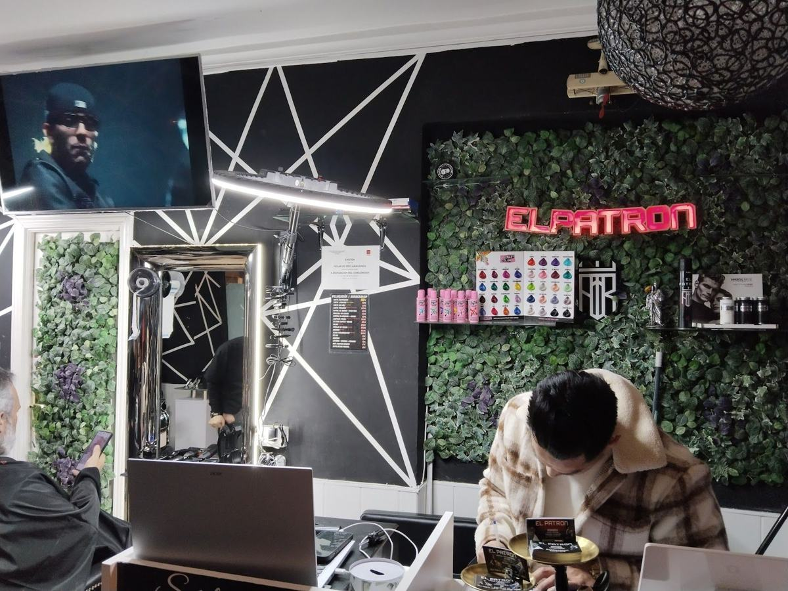
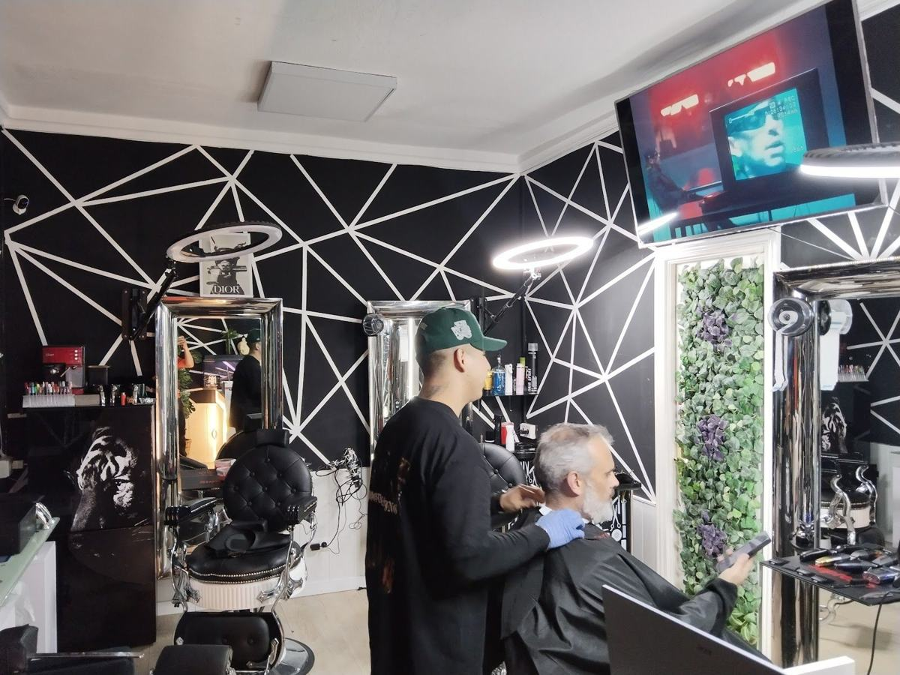
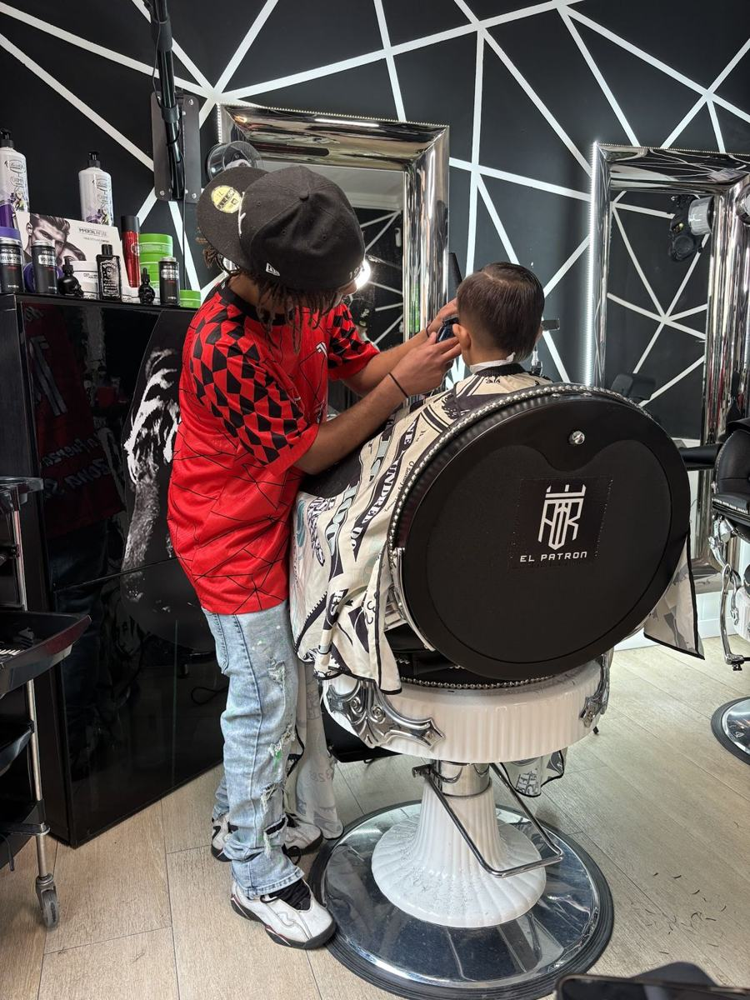
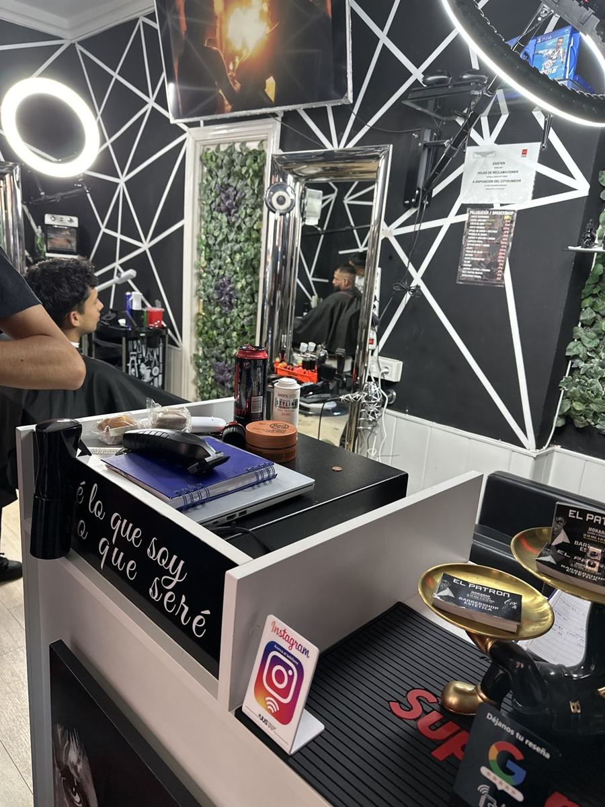
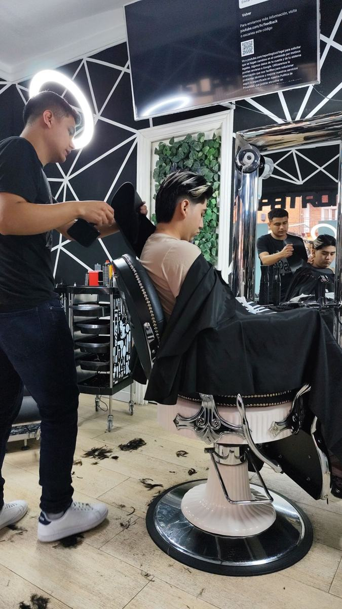
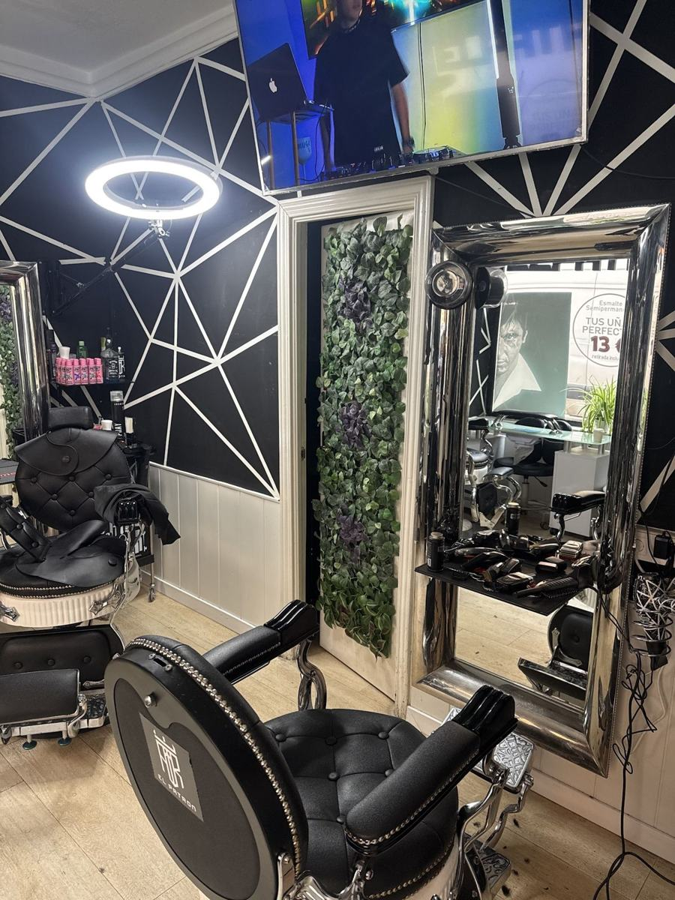
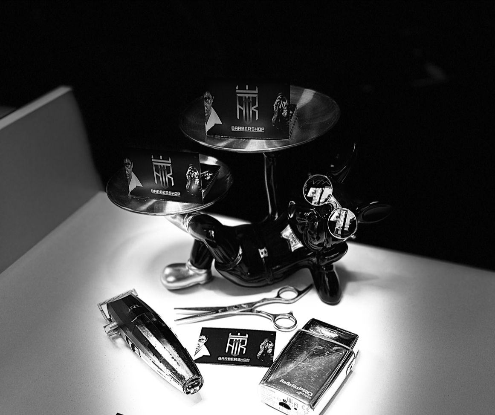

Corte, barba y afeitado. Todos los días de 10:30 a 21:30, también los domingos.
Pedir cita por WhatsApp





| Lunes | 10:30–21:30 |
|---|---|
| Martes | 10:30–21:30 |
| Miércoles | 10:30–21:30 |
| Jueves | 10:30–21:30 |
| Viernes | 10:30–21:30 |
| Sábado | 10:30–21:30 |
| Domingo | 10:30–21:30 |